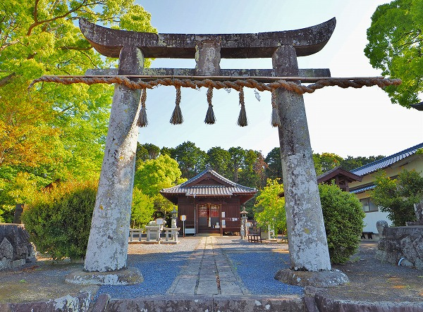
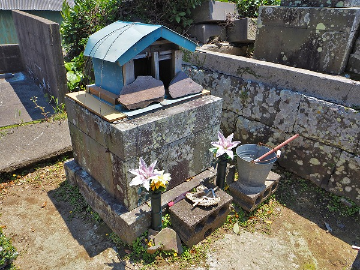
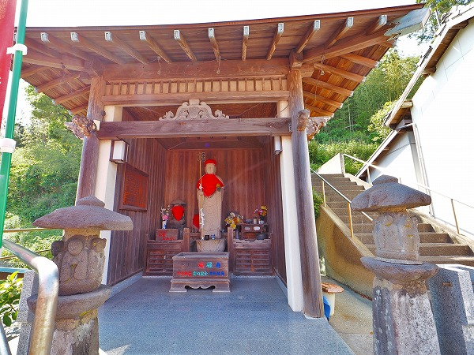
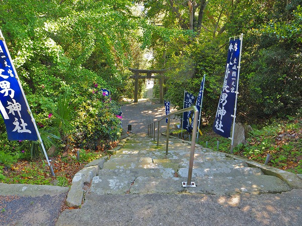
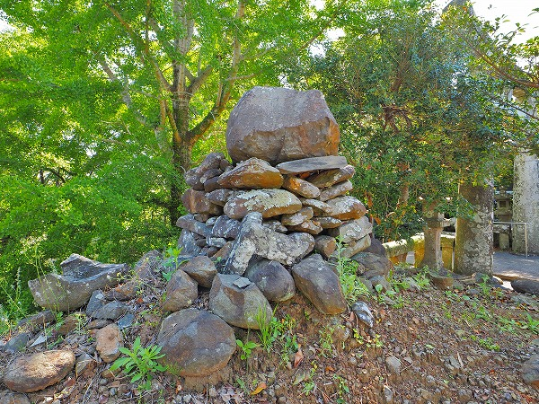

壱岐島、これまで
男嶽神社（+女嶽神社）、
諸津観音を紹介してきたが、それ以外にも面白い所が色々あったのでオムニバスで紹介したいと思う。
題して、
珍寺大道場的壱岐巡り。
ではレッツゴー！
塞神社
壱岐島で最初に訪れたのは島の南西部にある郷ノ浦の街にある
塞神社。
周辺は島でも数少ないスナックが並ぶ飲食街だ。
拝殿内。
最初に目につくのは
天井を突き破らんとする巨大なハリボテ珍子。
そう、ここは男根信仰の神社なのだ。

数々の男根が並ぶ。
欄間には春画がずらり。
何故かオッパイまで。

おかめの像。
下から見ると…
ああ、やっぱり…。
何故か珍子握った乙女像。
そして木像の巨大珍子。
中々リアルな造形でした。
先っちょから臨む郷ノ浦の街。
そろそろ日が暮れるゴールデンタイムだ。
この後、この
飲食街で大フィーバーすることになるのだが、それはまた別の機会にお話ししましょう…。
國片主神社
で、お次は島の丁度真ん中辺りにある
國片主神社。

歴史を感じさせる大鳥居。
少彦名命を祭る神社だ。
境内に入ると最初に出迎えてくれるのは
ミニ鳥居。
大きさは微妙に違っており、右は入試合格祈願、中は健康安産厄除、左は商売繁盛、五穀豊穣、大漁にご利益があるのだそうな。
見たところ左が一番ハードルが高そうだが、大漁祈願の漁師さんとか潜れるのか？ここ。
境内には石像が色々並んでいる。
猫の像は招福猫といい、男は右へ女は左へ回転させると願いが叶うというもの。
もちろんグルグル回転させていただきました。
願い事？
世界平和という事にしてしておきます…。
撫で小僧。
自分の具合の悪いところを撫でると良くなります、というおびんずるさま的石像。

各種干支の陶器。
の近くには要らなくなった陶器の破片が積み上げられている。
古い大鳥居と新しい石像のギャップが印象的だった。
月読神社
月読尊を祭る神社。
説明書きにはこの神社から京都の月読神社に分霊したと書いてあった。
つまり全国の月読神社の元宮である、と。
さらに言うと壱岐（というかこの神社）が
古神道発祥の地と言われているとか。
えええ！凄くないすか？
日本の古神道発祥の地の割にはこじんまりとした神社だった。
5月だったが、早くも茅の輪くぐりがあった。
こういうのって神社サイドから積極的にアピールするのってどうなんですかねえ。
古神道発祥の地がパワースポットとかにも乗っちゃうんだ…。
行ってみると本殿の裏の崖の手前に地神はあった。
うむ～。霊力のない私には
サッパリでした…。
芦辺の墓地
島の東部の街、芦辺の墓地には不思議なモノがあった。
家形の祠のようなもの。

隣の対馬の青海の墓でも似たような祠を見たが、いわゆる
霊屋のようなものだろうか。

トタン製の小さなものなので針金で押さえつけて石が乗せてある。
中には位牌と賽銭、香炉。
やはり霊屋の一種なのだろう。
新しく出来た墓にはこのような霊屋はない。
今後消えて行ってしまう習俗なのだろう。
気になったのがこのカラフルな
五色の卒塔婆。
中央に大きな卒塔婆、左右に13本の小さな卒塔婆が並ぶ。
関東などでは葬式の際、七本塔婆というミニ卒塔婆を墓に置くがそれとも違うようだ。
何処かで見た事があるような気もするのだが、思い出せない。
墓前に草履が置いてあった。
他の地方だが、埋葬の際草履を棄てて帰る所もあるそうだ。
これもその一種なのだろうか？
海を臨む墓。
五色卒塔婆の中央が板でなく、六角柱になっているタイプもあった。
鯨供養塔
芦辺に鯨供養塔があった。
この辺りは鯨がいて、三重県の熊野や長崎の大村など各地方から鯨漁をする集団がやって来たという。
かつては島内の各所にあったようだが、今ではこの一本だけになってしまった。
はらほげ地蔵
芦辺の街の南側には恐ろしいほど青い海が延々と続く。
その先にあるはらほげ地蔵。
近所に超人気のウニ料理店があり、待ち時間の間暇つぶしに来ている人も多いようだった。
海に突き出した六体の地蔵。
この地蔵が
満潮になると胸まで海に浸かってしまうそうだ。
何故はらほげ地蔵というかというと、各地蔵のお腹に穴が空いていてそこに供え物を入れて、潮が満ちて供え物が潮で流れれば願いが叶う的な話だったように思う。
「ほげる」は長崎弁で穴が空くという意味です。
長崎本土から観光で来た婆ちゃんが「どこがほっぐっとっかいっちょわからんね～」とか言っていた。
赤い前掛けを捲ってみたら小さな穴が空いていて賽銭が詰まっていた。
小島神社
干潮の時にだけ島に渡れる神社があると聞いたので行ってみた。
これかな？と思ったらコレではなかった。
地図を見たら金刀比羅神社とあった。
ここも陸地から突き出た所にあり、いい雰囲気だったけど。
で、こちらが干潮の時にしか渡れない島。
島の名前は前小島という。
しっかり道が出来ている。もちろん渡ってみる。
島は小島神社の社域であり、この「幻の道」は参道に相当するのだ。
意外と小さい島だが社殿が見えない。
どうやら島の反対側に回り込まなければ神社には行けないようだ。
向かって右側からまわり込む。
海岸沿いに多くの積み石があった。
島を半周したところで鳥居が現れた。
参道を上っていく。
拝殿。
この島は全域が聖域であり、枝一本たりとも持ち出すことが許されないのだ。
帰りは逆サイドの海沿いを歩いて戻る。
所々水たまりにカニや魚がいた。
この湾は
古代から大陸と日本を行き来する船が寄港したいわば島の玄関口だった場所だ。
その当時からこの島は聖域だったのだろうか。
人面石
壱岐市立一支国博物館。
一支国とは壱岐の旧称で、古くから中国の文献に登場する。
その壱岐の歴史を展示する博物館だ。
休憩がてら観に行こう。
立派な建物の割に展示内容は乏しかった。
え？もう終わり？って感じ。
唯一記憶に残っているのは弥生時代に作られたという人面石だけ。
対馬にも立派な博物館がオープンしてたが、そちらも展示は貧弱だった。
展示物の少なさもだが、興味深い説明がないのも魅力の薄さに拍車をかけていた。
子安観音堂
博物館の近くにあった小さな観音堂。
異様に神社が多い壱岐では数少ない観音堂だ。
扉には巡礼札が貼られており、ちょっと
東北地方の霊場っぽい雰囲気が漂っている。
この島にも四国八十八カ所の写し霊場があるが、ここもその一つだ。
入口には笠の付いた六地蔵があった。
原の辻遺跡
博物館からほど近い場所にある史跡公園。
一支国の王都、原の辻の様子を再現したものだ。
その中で気になったのがこちらの門。
高床の倉が数棟集まる祭殿の入口にあった門だが、柱の先端に何かが括りつけられている。
鳥を模したもので、
これが鳥居の原形という説もある。
お宝地蔵
再び郷ノ浦エリアに戻りお宝地蔵へ。
小左エ門地蔵とも呼ばれる。
伊藤小左エ門は江戸時代初期に「活躍」した海賊。
海賊と言っても単に略奪をしていただけでなく中国やベトナムと交易もやっていた。
その財産は莫大で八万貫とも言われている。

その小左エ門が寄贈したと言われる地蔵がこちら。
今でも小左エ門にちなんで
金運アップを願う人に信仰されている。
一説には壱岐のどこかに財宝が隠されている、とも言われている。
天手長男神社
珍寺大道場的壱岐巡り、ラストは
壱岐国一宮の天手長男神社。
天の岩戸を開いた天手力男命とその前で踊っていた天鈿女命などを祭る神社である。
すり鉢状の山頂に神社はある。
参道は長い石段。137段ある。

これは登り切った所から下を見たところ。
鳥居の先にも階段があるのだ。
ところが車だと一気に階段を上り切った所まで行けちゃうのだ。
モータリゼーション恐るべし。

駐車場の隅に何かの塚があった。
鬼の墓とか。
対馬で見た
ヤクマの塔や
八丁郭を彷彿とさせる姿だ。
見島の墓もそうだが、日本海や玄界灘にはこの
石積みのカルチャーが色濃く存在している印象があった。
拝殿。
神社だらけの壱岐において一宮の神社はさぞ立派なんだろうな、と勝手に想像してたらこじんまりとしたところだった。
でも砂利が綺麗に掃き清められていてきちんと手の入った印象はある。
拝殿内。
右上にある凧は島に伝わる鬼伝説にまつわるもの。
新しい建物なのだろう。それでも千社札が貼られていた。
あ、斉藤ひとり発見！
拝殿、本殿の左手にもうひとつ社がある。
実はこちらが本命で、淡島社だ。
以前は別の場所にあったものをここに遷してきたという。
安産の神様ということで内部はこんな。
両サイドに
ベビー服がズラリ。
ここも近年新しく建て直したので、奉納されている服も新しいものばかりだ。
かつてはベビー服だけでなく、ドレスなども飾られていた。
また玩具なども奉納されていたようだ。
今は似たようなベビー服（神社で売っている）が多く、奉納者の情念を感じさせるような奉納物は少ない。
それでも産まれてくる我が子への思いは今も昔も変わらない。

ベビー服の下に履物が6足だけ置かれていた。
というわけで壱岐のアレコレでした。
場所柄もっとお寺が多いのかと思ったら、まあ、とにかく
神社の多い島だった。
日本、韓国、神道、仏教、キリスト教、過去と現在、あらゆるものが
混ざり合ったり混ざらなかったり、それが壱岐のリアルな姿だった。
酒と魚は最高に美味かったぞ。
また行きたいものだ。